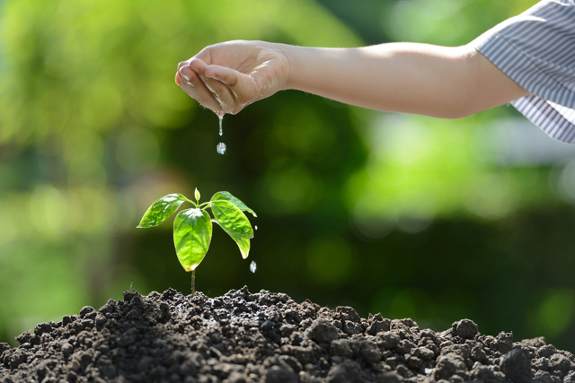

Qu'est ce que l'environnement
L’environnement regroupe les milieux naturels (eau, air, végétaux, animaux…) ainsi que les activités humaines qui les impactent (risques naturels et technologiques, énergie …).
Selon l‘Insee et le rapport « World Population Prospects : The 2015 revision » de l’ONU, d'ici 2050, la population devrait atteindre 9,6 milliards de personnes (actuellement à 7,3 milliards). Si les modes de consommation et de production actuels restent inchangés, nous aurons besoin de deux planètes pour maintenir nos modes de vie en 2050. Le développement démographique et industriel entraîne par ailleurs un réchauffement de l’atmosphère de la planète, qui déséquilibre et met en péril ses habitants. La protection de l’environnement et de ses ressources est donc devenue un enjeu prioritaire.

Qu'est ce la protection de l'environnement
Mais qu’est-ce que la protection de l’environnement ?
D’après le dictionnaire Larousse, la protection de l’environnement est avant tout une prise de conscience de la mondialisation des problèmes écologiques. Elle a débuté lors des premières expérimentations nucléaires en 1945 et a continué au fil des années et des problématiques rencontrées : production de pesticides, émissions de C02, etc.
all rights reserved 2020